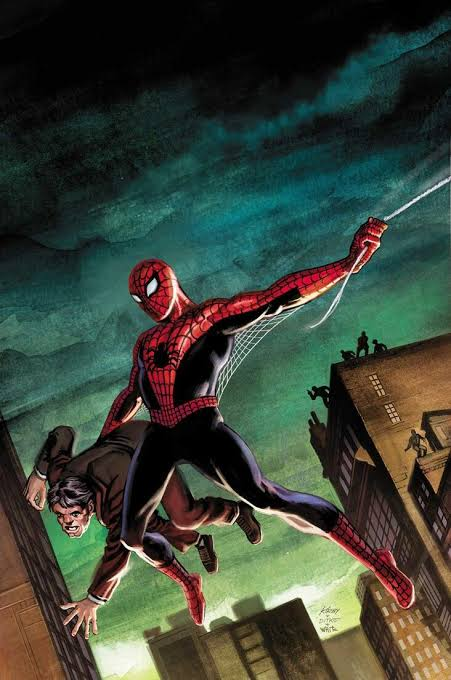

Spider-Man (Tierra-616)

Nombre Real
Peter Benjamin Parker
Primera Aparición
Apareció por primera vez en el cómic Amazing Fantasy #15 (publicado en agosto de 1962), creado por Stan Lee y Steve Ditko.
Lore / Historia
Tras ser mordido por una araña radiactiva en una exhibición científica, el joven estudiante Peter Parker adquiere agilidad y fuerza sobrehumanas. Al principio intenta ganar dinero con sus poderes, pero tras permitir el escape de un ladrón que más tarde asesina a su tío Ben, comprende que un gran poder conlleva una gran responsabilidad.
Logro Importante
Lideró a las múltiples variantes arácnidas del Multiverso en la gran batalla final contra la familia de los Herederos, salvando la Red de la Vida y el Destino de su destrucción total.